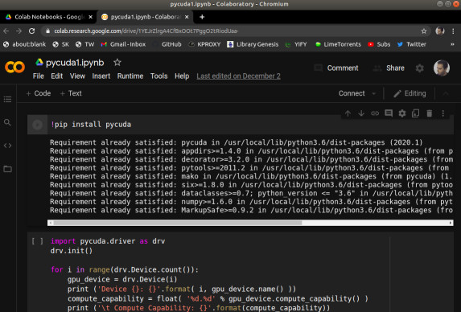
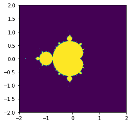

GPU, CUDA, PyCuda
Bilgisayarımızda hesapları yapan işlemci var, bu işlemci son zamanlarda çok çekirdekli hale de gelmeye başladı. Fakat bilgisayarımızda işlem yapan çok kuvvetli bir parça daha var: grafik işlemci (GPU).GPU paralel işlem açısından neredeyse pür mikroişlemci kadar kuvvetlidir, hatta bazı açılardan daha hızlıdır, çünkü tarihsel sebeplerle parallelliğe daha fazla yatkın olması gerekmiştir. GPU bir görüntünün hızla çizilmesi (rendering) için piksel bazında paralelliğe gitmek zorundaydı ve NVİDİA şirketinin ürünleri için artık bu normal bir operasyondur.
Araştırmacılar bu paralellikten istifade etmeye karar vermişler, ve grafiksel olmayan hesap işlemlerini sanki öyleymiş gibi GPU'ya sunuyorlar, ve cevabı geri tercüme ediyorlar, böylece GPU'nun hızlı paralel işlemci özelliğinden faydalanıyorlar. Pek çok matematiksel hesabı bu şekilde yaptıran olmuş, mesela matris çarpımı, PDE çözümü, simülasyon.
NVidia şirketi grafik kartlarının GPU'suna erişim için CUDA diye bir kütüphane sağlıyor. Onun üstüne PyCUDA ile Python bazlı erişim de var. Bazı ülkelerin üniversitelerinde CUDA eğitimini müfredata dahil edilmiş. Dikkat: NVidia kartı piyasadaki grafik kartlarından bir tanesidir, her laptop üzerinde NVidia olmayabilir (fakat NVidia piyasadaki en ünlülerden birisi, bunu da ekleyelim). Şimdilik GPU kodlaması için NVidia kartına sahip bir bilgisayar lazım.
Fakat GPU bazlı kodlama oldukca popüler hale geldi ki video kart üreticisi NVidia dışarıdan bilgisayara dahil edilebilen ayrı bir ufak GPU ünitesi bile yarattı. Ünitenin ismi Jetson kartı.
https://developer.nvidia.com/buy-jetson
Kart üzerinde Ubuntu işleyebiliyor, network aktarıcısı (router) dahil edilip hemen ssh ile alete bağlanabiliyorsunuz. Yapay öğrenim ile uğraşanlar için müthiş haber GPU üzerinde mevcut 192 çekirdek aşırı seviyede paralellik isteyen deep learning yaklaşımı için biçilmiş kaftan, ki burada birisi denemiş, ve nasıl yapılabileceği anlatılıyor. Blog sahibi Pete Warden imaj üzerinde yapay öğrenim algoritmaları kullanma konusunda uzmanlardan biridir, bu iş için kurduğu şirketini geçende Google satın aldı. Tabii ki Jetson üzerinde direk CUDA kodlaması da yapılabilir.
CUDA
Pek çok türde paralelellik, eşzamanlılaştırma tekniği var. Mesela disk bazlı çalışan eşle/indirge bunlardan biri. Her teknik paralleliği hangi birim üzerinde, nerede, ne zaman yaptırdığı bağlamında birbirinden farklı. GPU kodlaması SIMD yaklaşımını benimser, SIMD = Single Instruction Multiple Data, yani Tek Komut Pek Çok Veri yaklaşımı. SIMD ile bir işlem, ki bu çarpma, toplama, vs gibi temel işlemler ya da onların toplamı olan bir hesap ünitesi olabilir, birden fazla veri noktası üzerinde aynı anda uygulanır. Bu yaklaşımın grafik kartları, grafikleme için nasıl faydalı olacağını görmek zor değil, çünkü grafik kartları için veri, görüntü pikselleri, ve her piksel üzerinde, resim kare kare oluşturulurken tek bir işlemi aynı anda uygulamak faydalı olur. Bu işlem transformasyon olabilir, ki aynı matrisi çarpmayı gerektirir, işin takip etme (ray tracing) olabilir, vs.
CUDA NVidia'nın kendi kartlarına programcı erişimi sağlayan bir
arayüzdür. Python üzerinde PyCuda üzerinden erişilebilir. NVidia'nın
nvcc adlı genişletilmiş C++ derleyicisi aynı şekilde CUDA
kodlamasına C++ üzerinden izin verir.
Turkiye'de Alım
NVidia grafik kartına sahip bir makina fazla pahalı değil, özellikle yıllarca önce bir süperbilgisayar seviyesinde işletim gücüne eriştiğimizi düşünürsek. Bir oyun makinası PC ile beraber alınabilir, ya da, mesela harici Jetson kartı 70-100 dolar arasında.
GPU Var mı Kontrol
Dizüstü ya da masaüstü bilgisayarında acaba dışarıdan kodlanabilen GPU
var mı? Kontrol etmenin en kolay yolu Chromium tarayıcısına
sormak. Tarayıcı bu tür bilgilere sahip çünkü kendisi de mümkün olan
tüm hızlandırıcıları kullanmak istiyor, neyse tarayıcıya gidip adres
çubuğunda chrome://gpu yazarsak gösterilen raporda eğer varsa CUDA
yetenekli kart gösterilecektir.
CUDA ve Collab
Geliştiriciler için bir diğer seçenek Google bulutu üzerinde barındırılan not defteri servisi Google Collab. Bu servis Jupyter teknolojisine İnternet üzerinden erişim sağlıyor denebilir.
Collab'a girip bir not defteri yaratalım, ve menüde Edit | Notebook
settings seçelim, burada Hardware accelerator seçimi var. Bu seçimi
GPU haline getirelim. Bu kadar basit! Arka plandaki bir GPU
havuzundan Google size bir GPU atamış olacaktır.
Dikkat: Jupyter üzerinden GPU kullanımı direk kendi kartımız üzerinden kullanıma oranla yavaş olablir. Ama 10/20 kat hızlandırmayı hala Google Collab ile deneyimlemek mümkün.

Şimdi pycuda kuralım. Bu işlemi aynı not defterini ilk kez
açtığımızda her seferinde tekrar yapmamız lazım. Çünkü arka planda
bize Google tarafından bir makina atanıyor, ve eski makinanın kurulumu
yokolmuş oluyor, her seferinde yeni bir makinada, yeni bir süreçteyiz.
!pip install pycuda
Kurulum bitince artık pycuda çağrıları yapabiliriz. Acaba makinamızda ne tür bir GPU var?
import pycuda.driver as drv
drv.init()
for i in range(drv.Device.count()):
gpu_device = drv.Device(i)
print ('Device {}: {}'.format( i, gpu_device.name() ))
compute_capability = float( '%d.%d' % gpu_device.compute_capability() )
print ('\t Compute Capability: {}'.format(compute_capability))
print ('\t Total Memory: {} megabytes'.format(gpu_device.total_memory()//(1024**2)))
Device 0: Tesla T4
Compute Capability: 7.5
Total Memory: 15079 megabytes
Fena bir kart değil, >2500 çekirdeği var.
En basit işlemle başlayalım. Bir vektör üzerindeki sayıları 2 ile çarpalım.
from time import time
import pycuda.autoinit
from pycuda import gpuarray
host_data = np.array(range(10**7),dtype=np.float32)
device_data = gpuarray.to_gpu(host_data)
t1 = time()
device_data_x2 = np.float(2) * device_data
t2 = time()
host_data_x2 = device_data_x2.get()
print ('GPU %0.8f saniye.' % (t2-t1))
t1 = time()
host_data_x2_cpu = host_data * np.float(2)
t2 = time()
print ('CPU %0.8f saniye.' % (t2-t1))
GPU 0.00174046 saniye.
CPU 0.00841069 saniye.
GPU ile CPU arasında 8 kat civarı fark var, 10 milyon tane sayıyı ikiye çarpmak için.
Not 1: Jupyter ortamında pycuda kodlarının daha yavaş işlediği tecrübelenmiştir, bu hız karşılaştırmasını nihai olarak görmemek lazım.
Not 2: pycuda bir kodu ilk işlettiğinde onu bir derleme sürecinden geçirir, ama ikinci sefer aynı kodu görünce bunu yapmaz [1]. Bu sebeple ikinci, üçüncü, vs. işletim daha hızlı olacaktır.
Kodu incelersek gpuarray.to_gpu ile GPU'ya veriyi gönderdik. Daha
sonra np.float(2) * device_data ile çarpma işlemi GPU üzerinde
yapıldı. Tabii arka planda Python bazı tutkallama işi yaptı mesela *
işlemi büyük ihtimalle belli tipler için üste tanımlı (overloaded), ve
gpuarray gibi özel tipler söz konusu olunca arka planda GPU üzerinde
ek işlemler yapılacağı biliniyor.
Yapılan işlem çarpma, ve GPU bu her çarpma işlemini aynı anda, mümkün olduğu kadar fazla vektör öğesi üzerinde işletti.
Çekirdek (Kernel) Kod Kullanımı
Daha direk bir yöntemi görelim. Aslında CUDA kodları çekirdek kod
temelli işler, dışarıdan programcının verdiği bir kod, veri üzerinde
(mümkün olduğu kadar paralel bir şekilde) işletilir / uygulanır. Bu
Python'un map, ya da Pandas apply operasyonuna benzer.
import numpy as np
import pycuda.autoinit
from pycuda import gpuarray
from time import time
from pycuda.elementwise import ElementwiseKernel
host_data = np.float32( np.random.random(10**7) )
gpu_2x_ker = ElementwiseKernel(
"float *in, float *out",
"out[i] = 2*in[i];",
"gpu_2x_ker")
t1 = time()
host_data_2x = host_data * np.float32(2)
t2 = time()
print ('CPU: %f' % (t2 - t1))
device_data = gpuarray.to_gpu(host_data)
device_data_2x = gpuarray.empty_like(device_data)
t1 = time()
gpu_2x_ker(device_data, device_data_2x)
t2 = time()
from_device = device_data_2x.get()
print ('GPU: %f' % (t2 - t1))
CPU: 0.007268
GPU: 0.079255
Üstte ElementwiseKernel objesine üç tane parametre verdik. Bunlardan
ilki çekirdeğe / fonksiyona verilecek parametreler, bunların ilki
giriş verisi, ikincisi çıkış verisi, sözdizim C dili sözdizimine
benziyor dikkat edilirse, C ile *ptr ile tanımlanan değişkene
ptr[0], ptr[1], vs ile erişilebilir, göstergeç aritmetiği
uygulanabilir. Ayrıca çıkış vektörünün verisini "içeriden" alabilmek
için gpuarray.empty_like ile onu dışarıda önceden tanımlamamız
gerekti.. Bu vektöre bir yer açtık, o yerdeki vektörün değerleri GPU
tarafından dolduruldu.
Metodun ana kodu ikinci parametrede, burada giriş vektör öğesi
üzerinde hangi işlem yapılıp hangi çıkış öğeye atandığı
kodlanıyor. İndis i ile vektör öğesine erişiliyor, kod işlediğinde
her çekirdek eşzamanlı olarak tek bir öğe üzerinde işlem yapacak, buna
dikkat. GPU parallelliğinin temeli bu.
Bu [1]'den alınan bir giriş kodu tabii, parallelliğin bazı detayları
arka planda saklanmış, Python için en azından. Mesela kod içinde
referans edilen i bir iş parçacığı (thread) indisidir, bu indislerin
eldeki N vektör öğesi için 0 ila N arası değerler olacağına emin
miyiz? Kodun işleyişi buna bağlı çünkü. Ayrıca N tane ayrı iş
parçacığı oluşturulacağını biliyor muyuz?
C ile iki vektörü toplayan bir kod suna benzer,
__global__ void VecAdd(float* A, float* B, float* C)
{
int i = threadIdx.x;
C[i] = A[i] + B[i];
}
int main()
{
...
VecAdd<<<1, N>>>(A, B, C);
...
}
Burada <<<1, N>>> tanımındaki N ile kaç iş parçacığı olacağı
önceden tanımlandı. Üstteki gibi basit bir Python çağrısı var ise, bu
tanım arka planda yapılıyor olmalı. Indis 0-N de aynı şekilde
garantileniyor muhakkak.
Mandelbrot Kümesi
Fraktal resimleri üretmek için Mandelbrot yaklaşımı kullanılabilir, [4]'te konunun matematiğinden bahsedilildi. Orada gösterilen yaklaşımda her hücre üzerinde teker teker bir hesap yapıldığını görüyoruz. Bu hesabı GPU üzerinde eşzamanlı olarak işletmek mümkün.
import numpy as np
import pycuda.autoinit
from pycuda import gpuarray
from pycuda.elementwise import ElementwiseKernel
mandel_ker = ElementwiseKernel(
"pycuda::complex<float> *lattice, float *mandelbrot_graph, int max_iters, float upper_bound",
"""
mandelbrot_graph[i] = 1;
pycuda::complex<float> c = lattice[i];
pycuda::complex<float> z(0,0);
for (int j = 0; j < max_iters; j++)
{
z = z*z + c;
if(abs(z) > upper_bound) {
mandelbrot_graph[i] = 0;
break;
}
}
""",
"mandel_ker")
width, height, real_low, real_high, imag_low, imag_high, max_iters, upper_bound = 512,512,-2,2,-2,2,256, 2
real_vals = np.matrix(np.linspace(real_low, real_high, width), dtype=np.complex64)
imag_vals = np.matrix(np.linspace( imag_high, imag_low, height), dtype=np.complex64) * 1j
mandelbrot_lattice = np.array(real_vals + imag_vals.transpose(), dtype=np.complex64)
mandelbrot_lattice_gpu = gpuarray.to_gpu(mandelbrot_lattice)
mandelbrot_graph_gpu = gpuarray.empty(shape=mandelbrot_lattice.shape, dtype=np.float32)
mandel_ker( mandelbrot_lattice_gpu, mandelbrot_graph_gpu, np.int32(max_iters), np.float32(upper_bound))
mandelbrot_graph = mandelbrot_graph_gpu.get()
from matplotlib import pyplot as plt
fig = plt.figure(1)
plt.imshow(mandelbrot_graph, cmap='inferno')

x,y değerleri düz birer tek boyutlu vektördü, onları üst üste
istifleyip tek bir vektör ile GPU'ya gönderdik, böylece birbirine eş
olan x,y değerleri aynı indis üzerinden GPU içinden erişilir hale
geldi. Sonra, çekirdek içinde, özyineli döngüye girdik, bu döngü her
öge için mümkün olduğu kadar farklı GPU çekirdeği üzerinde koşturmayı
yapacak. Tabii max_iters döngüsü seri, senkron olarak işleyecek
fakat her x,y hücresinin paralel işlenmesi çok büyük bir ilerleme ve
hakikaten de Mandelbrot GPU kodu hızlı işliyor.
Üstteki kodda tam tekmilli program ifadeleri kullanabildiğimizi
görüyoruz, mesela for for döngüsü. Sözdizim C temelli ve hata
ayıklama süreci biraz uğraştırabilir çok çetrefil denemez.
Bir çekirdek çağrısı işletmenin tek yolu ElementwiseKernel değil,
aslında o yöntem en kolay olanı. Şimdi işleri biraz daha
zorlaştıralım, bir çekirdek fonksiyonu yazalım.
Ne zaman bu tür bir fonksiyon yazarsak ondan önce __global__
kelimesini kullanmamız gerekir. Dönüş tipi hep void olur çünkü
döndürelecek veriyi zaten çıkış parametresi olarak
tanımlayacağız. Kodlayacağımız yine vektörü skalar ile çarpmak olacak
ama bu sefer skaların kendisi bir parametre.
import pycuda.autoinit, time
import pycuda.driver as drv
import numpy as np
from pycuda import gpuarray
from pycuda.compiler import SourceModule
ker = SourceModule("""
__global__ void scalar_multiply_kernel(float *outvec, float scalar, float *vec)
{
int i = threadIdx.x;
outvec[i] = scalar*vec[i];
}
""")
scalar_multiply_gpu = ker.get_function("scalar_multiply_kernel")
testvec = np.random.randn(512).astype(np.float32)
testvec_gpu = gpuarray.to_gpu(testvec)
outvec_gpu = gpuarray.empty_like(testvec_gpu)
t1 = time.time()
scalar_multiply_gpu( outvec_gpu, np.float32(2), \
testvec_gpu, block=(512,1,1),
grid=(1,1,1))
t2 = time.time()
outvec_gpu.get()
print ('total time to compute on GPU: %f' % (t2 - t1))
Bu kodda bir diğer fark threadIdx.x ile eşzamanlı iş parçacığı
(thread) kimlik no'sunu çağrı yaparak kendimizin almış olmamız. Burada
bir soru acaba her ögeye yetecek kadar iş parçacığı (ki onların özgün
kimlik no'su) mevcut olacak mıdır, çünkü bu kimlik indeks olarak
vektör öğelerine erişmek için kullanılıyor? Cevap evet,
scalar_multiply_gpu çağrısına bakarsak orada 512 tane iş parçacığı
tanımlandı, vektörün büyüklüğü de aynı.
NVCC
Eğer Çollab içinde nvcc işletmek istersek, bunu ünlem ile yapabiliriz,
!nvcc --version
nvcc: NVIDIA (R) Cuda compiler driver
Copyright (c) 2005-2019 NVIDIA Corporation
Built on Sun_Jul_28_19:07:16_PDT_2019
Cuda compilation tools, release 10.1, V10.1.243
C++ kodu yazıp derlemek
%%writefile test.cpp
#include <stdio.h>
//Main function
int main(int Argc,char* Args[]){
printf("hello collab");
return 0;
}
Writing test.cpp
%%script bash
g++ -std=gnu++17 test.cpp -o test
ls -laX
./test
total 32
drwxr-xr-x 1 root root 4096 Dec 21 17:29 sample_data
-rwxr-xr-x 1 root root 8304 Dec 25 10:05 test
drwxr-xr-x 1 root root 4096 Dec 25 10:05 .
drwxr-xr-x 1 root root 4096 Dec 25 10:04 ..
drwxr-xr-x 1 root root 4096 Dec 21 17:29 .config
-rw-r--r-- 1 root root 109 Dec 25 10:05 test.cpp
hello collab
Bu derlemek işlemini nvcc ile de yapabilirdik.
Kaynaklar
[1] Tuomanen, Hands-On GPU Programming with Python and CUDA
[2] https://colab.research.google.com/
[3] https://gist.github.com/jfpuget/60e07a82dece69b011bb
[4] [Gayri Lineer Dinamik, Ders 19](https://burakbayramli.github.io/dersblog/chaos/chaos19/ders19.html)
[5] https://developer.nvidia.com/blog/even-easier-introduction-cuda/
[6] [Jetson Nano](nvidia-jetson-nano-2GB-wifi.html)